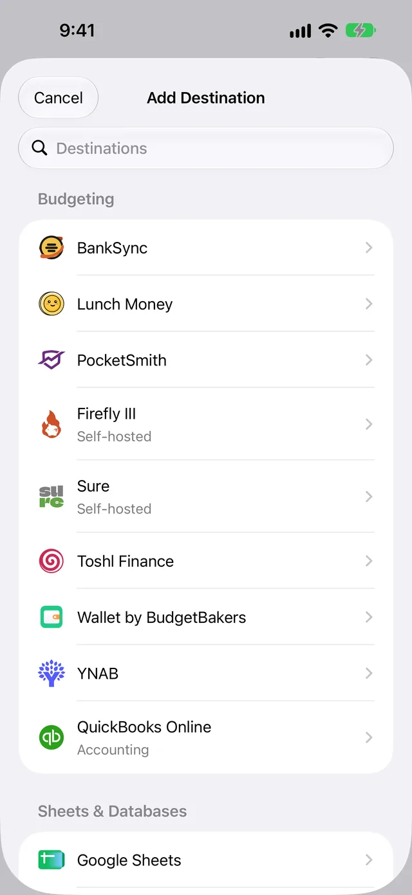
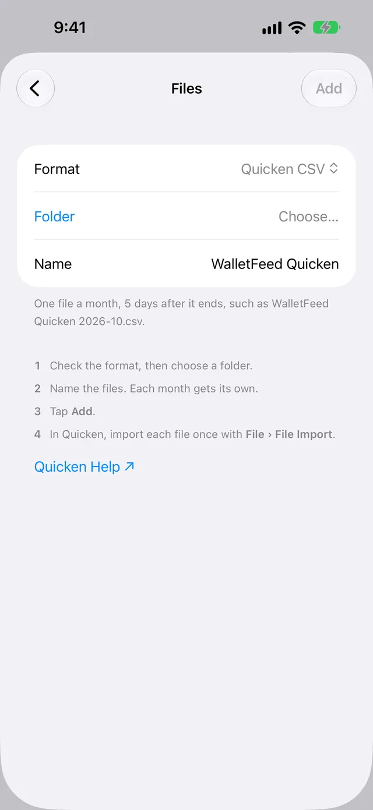

Import Apple Card transactions into Quicken for Windows
WalletFeed saves your Apple Card, Apple Cash and Savings transactions from your iPhone in one CSV file for each month. You import each file into Quicken for Windows one time.
Before you start
You must have these items:
- An iPhone with iOS 26 or a newer version
- WalletFeed, with access to your Wallet accounts
- WalletFeed Pro (a subscription with a 1-week free trial, or a one-time Lifetime purchase)
- Quicken Classic for Windows, with the menu item File › File Import › Banking Transactions › From (.CSV) File
- A folder in iCloud Drive, or in a different app that the Files app shows, for example Dropbox.
Your PC must have access to this folder. WalletFeed is available only in the US.
For Quicken for Mac, use the OFX files from WalletFeed. Refer to Import Apple Card transactions into Quicken.
Step 1: Add a Quicken CSV file in WalletFeed
-
On your iPhone, open WalletFeed.
-
Tap Destinations.
-
Tap + at the top of the screen.

-
In the Destinations search field, type
Quicken.
-
Tap Quicken CSV File.
-
If WalletFeed shows WalletFeed Pro, get WalletFeed Pro.
Result: After you get WalletFeed Pro, WalletFeed shows the Files screen.

-
If Format does not show Quicken CSV, select Quicken CSV in Format.
-
Tap Folder.
-
Select a folder, for example a folder in iCloud Drive.
Folder then shows the name of the folder.
-
To use a different name for the files, type the name in Name.
The name of each file contains this name, the month and
.csv, for exampleWalletFeed Quicken 2026-10.csv. -
Tap Add.
-
When WalletFeed shows Save Transactions to Files?, tap Save.
If you tap Cancel, WalletFeed removes the new destination.
The Save Transactions to Files? message tells you that the folder receives one file 5 days after each month ends. It also tells you the data in the files and the accounts. It gives the start date, or "including earlier ones" if Initial History is All.
WalletFeed keeps no copy of the files. WalletFeed has no account, and no WalletFeed server keeps your transactions or keys.
Step 2: Wait for the file for a month
WalletFeed writes the file for a month only one time. It writes the file 5 days after the end of the month. During these 5 days, most pending charges from the end of the month post.
-
Wait until the 6th day of the next month.
-
On your iPhone, open WalletFeed.
Result: WalletFeed writes the file for the month that ended. For example, on November 6, 2026, it writes
WalletFeed Quicken 2026-10.csv.
WalletFeed also writes the file on that day or after it when one of these occurs:
- WalletFeed gets a change from Wallet with Background Sync, and Background Sync can open the folder.
- An automation starts.
- iOS starts WalletFeed while your iPhone is on a charger.
WalletFeed does not write a file for this month until 5 days after this month ends.
Step 3: Import a file into Quicken for Windows
If your Quicken account has the same name as the account in the file, Quicken does not show Account does not exist in Quicken. An example of this name is Apple Card.
-
On your PC, open Quicken.
-
Make a backup of your Quicken data file.
For the steps, refer to Quicken's instructions to back up a data file.
-
Click File › File Import › Banking Transactions › From (.CSV) File.
-
In the Import transactions from .CSV file window, click Choose .CSV File to Import….
-
Open the folder that you selected in WalletFeed, for example the folder in iCloud Drive.
-
Select the file for one month, for example
WalletFeed Quicken 2026-10.csv. -
Click OK.
-
If Quicken shows Account does not exist in Quicken, select Add transaction to the existing account.
-
If Quicken shows this window, select the Quicken account for the transactions, for example your Apple Card account.
If the file has transactions from two Wallet accounts, Quicken shows the window for each account.
-
Do the steps that Quicken shows until it shows the summary.
Result: Quicken shows the number of transactions that it imported.
-
Do not import this file again.
For the window and its options, refer to Quicken's instructions to import transactions from a CSV file.
Data in the CSV files
Each file contains the transactions of one month from the Wallet accounts for the destination. The first row of the file contains the names of the columns. The columns are in the sequence that Quicken uses.
| Column | Data |
|---|---|
| Date | The date of the transaction in the sequence month, day, year (MM/DD/YYYY), for example 10/28/2026. |
| Payee | The merchant name. If Wallet has no merchant name, the payee is the description or the card statement text. |
| FI Payee | Empty. Quicken does not use this column. |
| Amount | The amount of the transaction. Purchases have a minus sign, for example -23.40. Payments and refunds have no minus sign. |
| Debit/Credit | Empty. The minus sign of the amount gives this data. |
| Category | The WalletFeed category, for example Groceries or Dining. A transaction in Other has no category. |
| Account | The name of the Wallet account, for example Apple Card or Apple Cash. |
| Tag | Empty. |
| Memo | The description and the card statement text, if they are different from the payee. For a pending charge, the memo starts with Pending. |
| Chknum | Empty. |
For a transaction in a different currency, the memo also contains the amount in that currency and the currency code. The file has no columns for the currency, the posted date or a transaction ID.
One file can contain transactions from Apple Card, Apple Cash and Savings. Quicken uses the Account column to put each transaction into an account.
The names of the WalletFeed categories can be different from the names of your Quicken categories. You can change the category of a transaction in Quicken.
New and changed transactions
WalletFeed puts each transaction in the file for the month of the transaction date. WalletFeed writes each file only one time. Thus, the file does not get changes after that time.
The file has the amount of a pending charge at the time that WalletFeed wrote the file. The memo of the charge starts with Pending. Make these changes in Quicken:
- If the amount of a pending charge changes when the charge posts, change the amount in Quicken.
- If a pending charge becomes a declined charge after WalletFeed writes the file, delete the charge in Quicken.
- If Wallet removes a transaction after WalletFeed writes the file, delete the transaction in Quicken.
- If Wallet adds a transaction to a month after WalletFeed writes the file, add the transaction in Quicken.
If a charge becomes a declined charge before WalletFeed writes the file, the file does not have the charge. A refund is a different transaction. It has the date of the refund. The amount of the refund has no minus sign.
Send previous transactions
A new Quicken CSV destination also receives previous transactions from the start date in Settings › Sync › Initial History. Initial History is All until you change it. WalletFeed moves the start date to the first day of its month. Thus, each file has all the transactions of its month.
WalletFeed writes the files for these previous months after you add the destination. This month gets its file 5 days after it ends. If you add the destination in the first 5 days of a month, the previous month also gets its file 5 days after it ends.
To get files for the previous months that have no file in the folder, use Send History:
- In WalletFeed, tap Destinations.
- Tap WalletFeed Quicken, or the name that you typed in Name.
- Tap Send History.
- Tap 30 Days, 90 Days, 1 Year or All.
WalletFeed then writes a file for each previous month in the period, if the folder has no file for that month. WalletFeed does not change a file that is in the folder. Send History does not write the months that WalletFeed wrote 5 days after their end.
Change or remove the destination
In WalletFeed, the destination has the name WalletFeed Quicken, or the name that you typed in Name. A change to Name on the screen of the destination does not change the names of the files. The Files row on the screen of the destination shows the names of the files.
Send only some transactions
- In Destinations, tap the destination.
- Set Filter to on.
- Set Include, Minimum, Accounts, Categories or Exclude.
WalletFeed uses the new filter for the files that it writes after the change. The files in the folder do not change. If the filter removes all the transactions of a month, WalletFeed does not write a file for that month.
The filter of a Quicken CSV destination always includes pending charges, so that each charge gets into a file.
Put the files in a different folder
-
In Destinations, tap the destination.
-
Tap Change Folder.
-
Select the new folder.
Then the new folder gets the files for all the months from the start date, 5 days after each month ends. Some of these files have transactions that you imported before.
-
In Quicken, import only the files for the months that you did not import before.
Stop the destination for a time
- In Destinations, tap the destination.
- Set Enabled to off.
When you set Enabled to on again, WalletFeed writes the files for the months that ended during that time. Each file comes 5 days after its month ends.
Remove the destination
-
In Destinations, tap the destination.
-
Tap Delete.
-
Tap Delete again.
The files stay in the folder. Quicken keeps the transactions that you imported.
If there is a problem
First, use Send Test to make sure that WalletFeed can write to the folder:
-
In WalletFeed, tap Destinations.
-
Tap the destination.
-
Tap Send Test.
The folder then gets
WalletFeed Quicken Test.csv. This file has a test purchase of $4.20 in the account Sample Card. If this file is in the folder, WalletFeed can write to the folder. -
Do not import
WalletFeed Quicken Test.csvinto your Quicken data file. -
If you import this file, select Ignore transactions from this account in the Account does not exist in Quicken window.
If Quicken shows each transaction two times
You imported the file for a month two times. Quicken adds all the transactions in a CSV file each time that you import the file.
- In Quicken, delete the transactions that you imported the second time.
- Import each file only one time.
If Quicken does not import the file
The file does not have the format that Quicken can import. Quicken then shows a message, for example "File selected did not have the required format".
A file from a CSV File destination has different columns, and Quicken does not import it. A Quicken user also got this message on a PC that shows dates as year, month, day. The file has dates as month, day, year, the format in Quicken's instructions.
- Make sure that the file name is like the Files row of the destination, for example
WalletFeed Quicken 2026-10.csv. - If Windows or Quicken on your PC shows dates in a different sequence, try the sequence month, day, year.
- Import the file again.
If the folder has no file for a month
WalletFeed writes the file for a month 5 days after the month ends, and only if the month has transactions for the destination.
- If the date is before the 6th day of the next month, wait until that day.
- In WalletFeed, tap Settings (the gear button) at the top of the screen.
- Tap Sync Now.
If the filter of the destination removed all the transactions of the month, the month has no file. A change to the filter does not write the file for a month that ended. To get the file, do these steps:
-
Change the filter (refer to Send only some transactions).
-
Tap Change Folder.
-
Select the same folder.
Then WalletFeed writes the files for the months that have no file in the folder. It does not change the files in the folder.
If a pending charge has a different amount in Quicken
The file has the amount of the charge at the time that WalletFeed wrote the file. The memo of the charge starts with Pending.
- In Quicken, change the amount to the amount in Wallet.
If Quicken has a transaction that Wallet removed
WalletFeed does not change a file after it writes the file.
- In Quicken, delete the transaction.
If Quicken shows "Account does not exist in Quicken"
The file has an account name that your Quicken data file does not have, for example Apple Card.
- Select Add transaction to the existing account.
- Select the Quicken account for the transactions in the file.
If you give your Quicken account the same name as the account name in the file, Quicken does not show this window.
If WalletFeed shows "Couldn't open this folder."
WalletFeed cannot open the folder that you selected.
- Tap Folder, or Change Folder on the screen of the destination.
- Select a different folder.
If the destination shows "Can't open the folder. Choose it again."
WalletFeed does not have access to the folder of the destination at this time.
- In WalletFeed, tap Destinations.
- Tap the destination.
- Tap Change Folder.
- Select the folder of the destination again.
If you cannot tap Add
You can tap Add only after you select a folder.
- Tap Folder.
- Select a folder.
If Destinations shows "Sync Requires Pro"
You do not have WalletFeed Pro at this time. WalletFeed keeps the destination but does not write the files.
- In Destinations, tap Upgrade.
- If you got WalletFeed Pro before, tap Restore Purchases.
- To get WalletFeed Pro for the first time, select a plan.
Related
Updated October 30, 2026